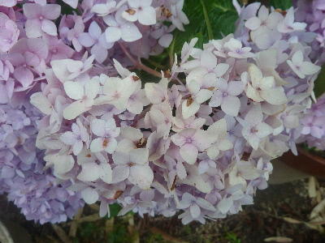
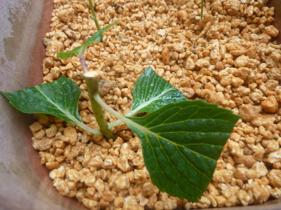
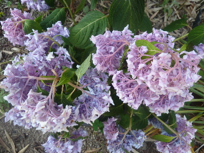
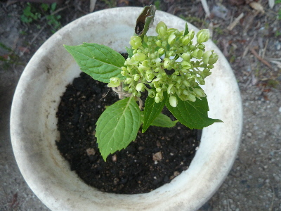
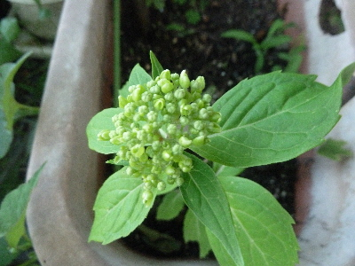
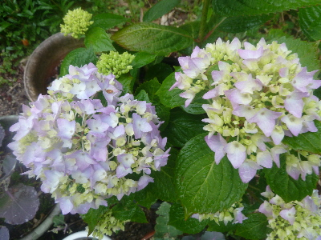

遊びで植物を育てよう
【新しい記事】
2018/06/10
今年最初のアジサイの挿し木
花の色が薄くなったので切り取りました。

有効利用で挿し木です。

梅雨で定期的に雨が降るといいな。
【ページTOP】 【アジサイTOP】
【園芸TOP】
2018/06/02
アジサイがしおれていました。
雨が降っていなかったので花が下向きになっていました。

鉢植えなので乾燥するとすぐこうなります。
もうちょっとしたら、バッサリ剪定して小さくしようかな。
【ページTOP】 【アジサイTOP】
【園芸TOP】
2018/05/26
挿し木のアジサイを鉢植えにしました。
鉢上げしました。

たぶん1年で大きくなると思うので、地に植えた方がよかったかも？
植えてしまったものはしょうがないので、このまま来年までこれで育てようと思います。
アジサイは2月くらいに植え替えるのがいいみたいですね。
【ページTOP】 【アジサイTOP】
【園芸TOP】
2018/05/19
挿し木したアジサイに花がつきました。
挿し木して1年も経っていませんが、もう花がつきました。

木自体がまだひょろひょろなので倒れないか心配です。
この木は今年花が何個つくのかな。
【ページTOP】 【アジサイTOP】
【園芸TOP】
2018/05/13
母の日のアジサイ
母の日には色が付くかなと思ったんですが、もう少しでした。

これはこれで十分綺麗ですね。
【前の記事】
【ページTOP】 【アジサイTOP】
【園芸TOP】
畑仕事じゃないよ。
【おいしいものを食べよう。】【たくさん寝よう。】
【ソロ活をしよう!】【季節感のあることをしよう。】【動画視聴はほどほどに。】【当サイトの全てのコンテンツは無断転載禁止です。】